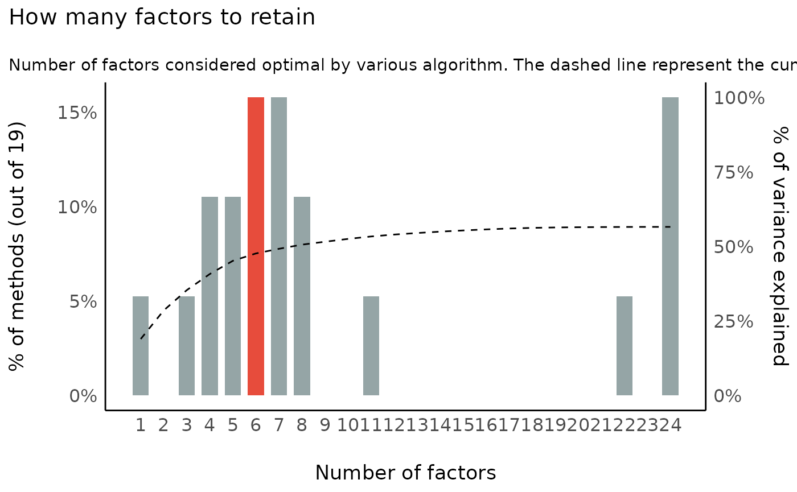

How to perform a Factor Analysis (FA)
The difference between PCA and EFA can be quite hard to intuitively grasp as their output is very familiar. The idea is that PCA aims at extracting the most variance possible from all variables of the dataset, whereas EFA aims at creating consistent factors from the dataset without desperately trying to represent all the variables.
This is why PCA is popular for feature reduction, as it will try to best represent the variance contained in the original data, minimizing the loss of information. On the other hand, EFA is usually in the context of exploring the latent dimensions that might be hidden in the observed variables, without necessarily striving to represent the whole dataset.
To illustrate EFA, let us use the International Personality Item Pool
data available in the psych
package. It includes 25 personality self report items. The authors built
these items following the big 5 personality
structure.
Factor Structure (Sphericity and KMO)
The first step is to test if the dataset is suitable for carrying out factor analysis. There are two
Bartlett’s Test of Sphericity: This tests whether a matrix (of correlations) is significantly different from an identity matrix. The test provides probability that the correlation matrix has significant correlations among at least some of the variables in a dataset, a prerequisite for factor analysis to work. In other words, before starting with factor analysis, one needs to check whether Bartlett’s test of sphericity is significant.
Kaiser, Meyer, Olkin (KMO) Measure of Sampling Adequacy (MSA): This test was introduced by Kaiser (1970) as the Measure of Sampling Adequacy (MSA), later modified by Kaiser and Rice (1974). The Kaiser-Meyer-Olkin (KMO) statistic, which can vary from 0 to 1, indicates the degree to which each variable in a set is predicted without error by the other variables. A value of 0 indicates that the sum of partial correlations is large relative to the sum correlations, indicating factor analysis is likely to be inappropriate. A KMO value close to 1 indicates that the sum of partial correlations is not large relative to the sum of correlations and so factor analysis should yield distinct and reliable factors.
Both tests can be performed by using the
performance::check_factorstructure() function. First, we
set up the data.
library(parameters)
library(psych)
# Load the data
data <- psych::bfi[, 1:25] # Select only the 25 first columns corresponding to the items
data <- na.omit(data) # remove missing valuesNext, we check test if the dataset is suitable for carrying out factor analysis.
library(performance)
# Check factor structure
performance::check_factorstructure(data)
#> # Is the data suitable for Factor Analysis?
#>
#> - KMO: The Kaiser, Meyer, Olkin (KMO) measure of sampling adequacy suggests that data seems appropriate for factor analysis (KMO = 0.85).
#> - Sphericity: Bartlett's test of sphericity suggests that there is sufficient significant correlation in the data for factor analysis (Chisq(300) = 18146.07, p < .001).Exploratory Factor Analysis (EFA)
Now that we are confident that our dataset is appropriate, we will explore a factor structure made of 5 latent variables, corresponding to the items’ authors theory of personality.
# Fit an EFA
efa <- psych::fa(data, nfactors = 5) %>%
model_parameters(sort = TRUE, threshold = "max")
efa
#> # Rotated loadings from Factor Analysis (oblimin-rotation)
#>
#> Variable | MR2 | MR1 | MR3 | MR5 | MR4 | Complexity | Uniqueness
#> -------------------------------------------------------------------------
#> N1 | 0.83 | | | | | 1.07 | 0.32
#> N2 | 0.78 | | | | | 1.03 | 0.39
#> N3 | 0.70 | | | | | 1.08 | 0.46
#> N5 | 0.48 | | | | | 2.00 | 0.65
#> N4 | 0.47 | | | | | 2.33 | 0.49
#> E2 | | 0.67 | | | | 1.08 | 0.45
#> E4 | | -0.59 | | | | 1.52 | 0.46
#> E1 | | 0.55 | | | | 1.22 | 0.65
#> E5 | | -0.42 | | | | 2.68 | 0.59
#> E3 | | -0.41 | | | | 2.65 | 0.56
#> C2 | | | 0.67 | | | 1.18 | 0.55
#> C4 | | | -0.64 | | | 1.13 | 0.52
#> C3 | | | 0.57 | | | 1.10 | 0.68
#> C5 | | | -0.56 | | | 1.41 | 0.56
#> C1 | | | 0.55 | | | 1.20 | 0.65
#> A3 | | | | 0.68 | | 1.06 | 0.46
#> A2 | | | | 0.66 | | 1.03 | 0.54
#> A5 | | | | 0.54 | | 1.48 | 0.53
#> A4 | | | | 0.45 | | 1.74 | 0.70
#> A1 | | | | -0.44 | | 1.88 | 0.80
#> O3 | | | | | 0.62 | 1.16 | 0.53
#> O5 | | | | | -0.54 | 1.21 | 0.70
#> O1 | | | | | 0.52 | 1.10 | 0.68
#> O2 | | | | | -0.47 | 1.68 | 0.73
#> O4 | | | | | 0.36 | 2.65 | 0.75
#>
#> The 5 latent factors (oblimin rotation) accounted for 42.36% of the total variance of the original data (MR2 = 10.31%, MR1 = 8.83%, MR3 = 8.39%, MR5 = 8.29%, MR4 = 6.55%).As we can see, the 25 items nicely spread on the 5 latent factors, the famous big 5. Based on this model, we can now predict back the scores for each individual for these new variables:
# let's look only at the first five individuals
head(predict(efa, names = c("Neuroticism", "Conscientiousness", "Extraversion", "Agreeableness", "Opennness")), 5)
#> Neuroticism Conscientiousness Extraversion Agreeableness Opennness
#> 1 -0.22 -0.128 -1.327 -0.855 -1.61
#> 2 0.16 -0.466 -0.572 -0.072 -0.17
#> 3 0.62 -0.141 -0.043 -0.552 0.23
#> 4 -0.12 -0.058 -1.063 -0.091 -1.06
#> 5 -0.17 -0.460 -0.099 -0.712 -0.66How many factors to retain in Factor Analysis (FA)
When running a factor analysis (FA), one often needs to specify how many components (or latent variables) to retain or to extract. This decision is often motivated or supported by some statistical indices and procedures aiming at finding the optimal number of factors.
There are a huge number of methods exist to statistically address this issue, and they can sometimes give very different results.
Unfortunately, there is no consensus on which method to use, or which is the best.
The Method Agreement procedure
The Method Agreement procedure, first implemented in the psycho
package (Makowski 2018), proposes to rely
on the consensus of methods, rather than on one method in
particular.
This procedure can be easily used via the n_factors()
function, re-implemented and improved in the parameters
package. One can provide a dataframe, and the function will run a large
number of routines and return the optimal number of factors based on the
higher consensus.
n <- n_factors(data)
n
#> # Method Agreement Procedure:
#>
#> The choice of 6 dimensions is supported by 3 (15.79%) methods out of 19 (Optimal coordinates, Parallel analysis, Kaiser criterion).Interestingly, the smallest nubmer of factors that most methods suggest is 6, which is consistent with the newer models of personality (e.g., HEXACO).
More details, as well as a summary table can be obtained as follows:
as.data.frame(n)
#> n_Factors Method Family
#> 1 1 Acceleration factor Scree
#> 2 3 CNG CNG
#> 3 4 beta Multiple_regression
#> 4 4 VSS complexity 1 VSS
#> 5 5 VSS complexity 2 VSS
#> 6 5 Velicer's MAP Velicers_MAP
#> 7 6 Optimal coordinates Scree
#> 8 6 Parallel analysis Scree
#> 9 6 Kaiser criterion Scree
#> 10 7 t Multiple_regression
#> 11 7 p Multiple_regression
#> 12 7 Scree (R2) Scree_SE
#> 13 8 Scree (SE) Scree_SE
#> 14 8 BIC BIC
#> 15 11 BIC (adjusted) BIC
#> 16 22 Bentler Bentler
#> 17 24 Bartlett Barlett
#> 18 24 Anderson Barlett
#> 19 24 Lawley Barlett
summary(n)
#> n_Factors n_Methods
#> 1 1 1
#> 2 3 1
#> 3 4 2
#> 4 5 2
#> 5 6 3
#> 6 7 3
#> 7 8 2
#> 8 11 1
#> 9 22 1
#> 10 24 3A plot can also be obtained (the see package must be
loaded):
library(see)
plot(n) + theme_modern()
Confirmatory Factor Analysis (CFA)
We’ve seen above that while an EFA with 5 latent variables works great on our dataset, a structure with 6 latent factors might in fact be more appropriate. How can we statistically test if that is actually the case? This can be done using Confirmatory Factor Analysis (CFA) (as opposed to Exploratory FA), which bridges factor analysis with Structural Equation Modeling (SEM).
However, in order to do that cleanly, EFA should be independent from CFA: the factor structure should be explored in a “training” set, and then tested (or “confirmed”) in a “testing” set.
In other words, the dataset used for exploration and confirmation should not be the same, a standard widely adopted in the field of machine learning.
Partition the data
The data can be easily split into two sets with the
data_partition() function, through which we will use 70% of
the sample as training and the rest as test.
# to have reproducible result, we will also set seed here so that similar
# portions of the data are used each time we run the following code
partitions <- datawizard::data_partition(data, training_proportion = 0.7, seed = 111)
training <- partitions$p_0.7
test <- partitions$testCreate CFA structures out of EFA models
In the next step, we will run two EFA models on the training set, specifying 5 and 6 latent factors respectively, that we will then transform into CFA structures.
structure_big5 <- psych::fa(training, nfactors = 5) %>%
efa_to_cfa()
structure_big6 <- psych::fa(training, nfactors = 6) %>%
efa_to_cfa()
# Investigate how the models look
structure_big5
#> # Latent variables
#> MR2 =~ N1 + N2 + N3 + N4 + N5 + .row_id
#> MR1 =~ E1 + E2 + E3 + E4 + E5
#> MR3 =~ C1 + C2 + C3 + C4 + C5
#> MR5 =~ A1 + A2 + A3 + A4 + A5
#> MR4 =~ O1 + O2 + O3 + O4 + O5
structure_big6
#> # Latent variables
#> MR2 =~ N1 + N2 + N3 + N5 + .row_id
#> MR3 =~ C1 + C2 + C3 + C4 + C5
#> MR1 =~ E1 + E2 + E4 + E5 + N4 + O4
#> MR5 =~ A1 + A2 + A3 + A4 + A5
#> MR4 =~ E3 + O1 + O2 + O3
#> MR6 =~ O5As we can see, a structure is just a string encoding how the manifest variables (the observed variables) are integrated into latent variables.
Fit and Compare models
We can finally apply this structure to the testing dataset using the
lavaan package, and compare these models against each
other:
library(lavaan)
library(performance)
big5 <- lavaan::cfa(structure_big5, data = test)
big6 <- lavaan::cfa(structure_big6, data = test)
performance::compare_performance(big5, big6)
#> # Comparison of Model Performance Indices
#>
#> Name | Model | Chi2 | Chi2_df | p (Chi2) | Baseline(325) | p (Baseline) | GFI | AGFI | NFI | NNFI | CFI | RMSEA | RMSEA CI | p (RMSEA) | RMR | SRMR | RFI | PNFI | IFI | RNI | Loglikelihood | AIC (weights) | BIC (weights) | BIC_adjusted
#> ---------------------------------------------------------------------------------------------------------------------------------------------------------------------------------------------------------------------------------------------------------------------------
#> big5 | lavaan | 1366.793 | 289.000 | < .001 | 5413.276 | < .001 | 0.861 | 0.831 | 0.748 | 0.762 | 0.788 | 0.071 | [0.07, 0.08] | < .001 | 12.332 | 0.076 | 0.716 | 0.665 | 0.790 | 0.788 | -35860.601 | 71845.2 (>.999) | 72130.1 (>.999) | 71933.186
#> big6 | lavaan | 1504.653 | 285.000 | < .001 | 5413.276 | < .001 | 0.854 | 0.820 | 0.722 | 0.727 | 0.760 | 0.077 | [0.07, 0.08] | < .001 | 12.595 | 0.083 | 0.683 | 0.633 | 0.762 | 0.760 | -35929.531 | 71991.1 (<.001) | 72294.3 (<.001) | 72084.722All in all, it seems that the Big-5 structure remains quite reliable.
Structural Equation Modeling
The previous example shows one of the enormous amount of modeling possibilities for structural equation models, in particular an example for mediation analysis, i.e. a model that estimates indirect effects in partial mediation structures.
set.seed(1234)
X <- rnorm(100)
M <- 0.5 * X + rnorm(100)
Y <- 0.7 * M + rnorm(100)
df <- data.frame(X = X, Y = Y, M = M)
model <- " # direct effect
Y ~ c*X
# mediator
M ~ a*X
Y ~ b*M
# indirect effect (a*b)
ab := a*b
# total effect
total := c + (a*b)
"
fit <- lavaan::sem(model, data = df, test = "Satorra-Bentler")
model_parameters(fit)
#> # Regression
#>
#> Link | Coefficient | SE | 95% CI | z | p
#> --------------------------------------------------------------
#> Y ~ X (c) | 0.04 | 0.10 | [-0.17, 0.24] | 0.35 | 0.728
#> M ~ X (a) | 0.47 | 0.10 | [ 0.27, 0.68] | 4.61 | < .001
#> Y ~ M (b) | 0.79 | 0.09 | [ 0.61, 0.97] | 8.54 | < .001
#>
#> # Defined
#>
#> To | Coefficient | SE | 95% CI | z | p
#> -----------------------------------------------------------
#> (ab) | 0.37 | 0.09 | [0.19, 0.55] | 4.06 | < .001
#> (total) | 0.41 | 0.12 | [0.17, 0.65] | 3.29 | 0.001